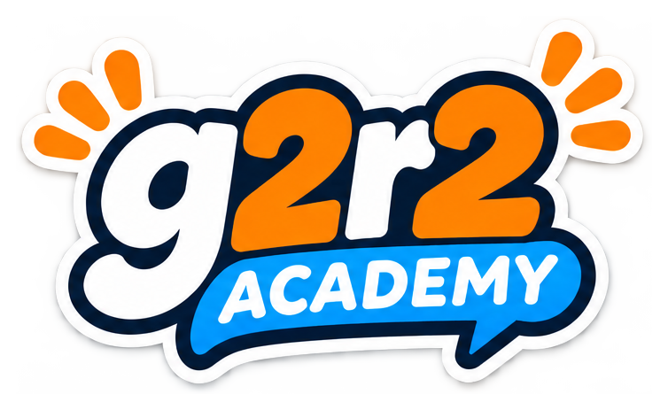

See submitted register numbers and inspect your students’ GitHub repositories.
View JSON
View Issues
Loading…
This page displays submissions, not live mission progress. The public GitHub Pages site and submissions.json are not teacher-only/private.